Highlighted author(s): Rhine Samajdar, Sarang Gopalakrishnan
Authors: Yifan F. Zhang, Rhine Samajdar, Sarang Gopalakrishnan
Type: both · Category: strongly correlated electrons · PDF: https://arxiv.org/pdf/2605.18941v1
Analysis basis: full PDF text, analyzed in chunks
Topic relevance: 🔥 non-equilibrium dynamics 4/5 · non-equilibrium universality 3/5 · spintronics-quantum-optics interface 3/5 · QC/QI experiment 2/5 · driven-dissipative phase transition 2/5 · methods for driven-dissipative 2/5 · quantum measurements 2/5
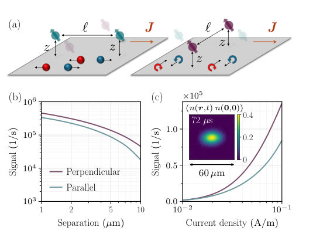
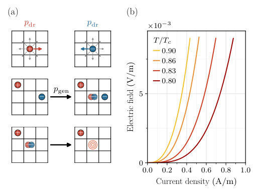
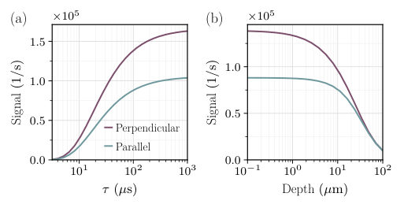
Summary. This paper proposes a method to use NV-center magnetometry to distinguish between quasiparticle and vortex-driven transport in 2D superconductors. By measuring the anisotropy in spatially correlated magnetic noise, researchers can detect the perpendicular drift of vortices caused by the Magnus force. This provides a new experimental tool to study the nature of transport in anomalous metallic phases.
Why it may be interesting. The use of spatially correlated noise to probe the hydrodynamic fingerprints of topological excitations (vortices) provides a powerful template for studying non-equilibrium dynamics and transport in other many-body systems.
Main problem. Distinguishing whether resistive transport in 2D superconductors near the BKT transition arises from the motion of normal-state quasiparticles or magnetic vortices.
Main result. The authors identify a directional fingerprint in spatially correlated magnetic noise: vortices drift perpendicular to the applied current due to the Magnus force, creating an anisotropic noise covariance that distinguishes them from parallel-drifting electric carriers.
Method. The study combines a renormalization-group treatment of vortex unbinding with a two-flavor stochastic exclusion process (SEP) simulation, mapped to magnetic field correlations measurable via NV center covariance magnetometry.
Model / system. The physical system consists of 2D superconductors (e.g., Nb thin films or monolayer TMDs) near the BKT transition, modeled using a mesoscopic SEP to capture vortex hydrodynamics and the Magnus force.
Key observables. Noise covariance (Gamma) measured at two nearby NV centers, specifically the anisotropy in covariance for NV pairs aligned parallel vs. perpendicular to the current.
Important parameters / regimes. Applied current density (J), temperature (T), vortex mobility, NV separation (l), and NV depth (z).
Assumptions / limitations. Assumes the 2D limit where the Pearl length exceeds all other scales, and that the NV depth is much smaller than the NV separation (z << l).
Figures summary. Fig 2(a) shows SEP update rules; Fig 2(b) shows nonlinear I-V curves; Fig 3(a) shows noise signal saturation with NV lifetime; Fig 3(b) shows depth-insensitivity of the signal.
Paper structure. The paper introduces the transport distinction problem, presents a theoretical framework using RG and SEP models, demonstrates the directional signature of vortex motion, and validates the signal's detectability with current NV magnetometry capabilities.
Resistive transport near a superconducting phase can arise from the motion of normal-state quasiparticles or that of vortices. The conductivity alone does not distinguish between these mechanisms. We propose an unambiguous method for telling them apart, using the recently developed experimental tool of covariance magnetometry, which uses nitrogen-vacancy centers in diamond to probe real-time spatiotemporal correlations in magnetic noise. Our key insight is that, under an applied current, the underlying charge carriers leave a directional fingerprint in the spatially correlated magnetic noise above the sample: ordinary electric carriers drift parallel to the current, whereas vortices, owing to the Magnus force, drift perpendicular to it. The noise covariance detects this anisotropy and identifies the vortex-driven nature of transport. We compute the noise correlations expected for a representative thin-film superconductor and demonstrate that the anisotropic signal is well within the reach of current experimental capabilities.
Highlighted author(s): A. G. Sotnikov
Authors: I. V. Lukin, M. O. Luhanko, Yu. V. Slyusarenko, A. G. Sotnikov
Type: theory · Category: strongly correlated electrons · PDF: https://arxiv.org/pdf/2605.18982v1
Analysis basis: full PDF text, analyzed in chunks
Topic relevance: entanglement & information structure 2/5
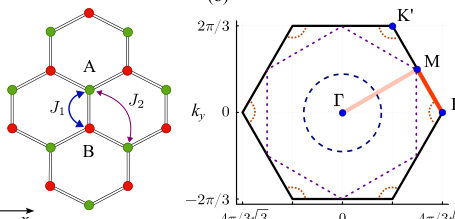
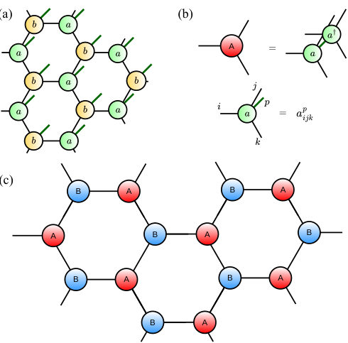
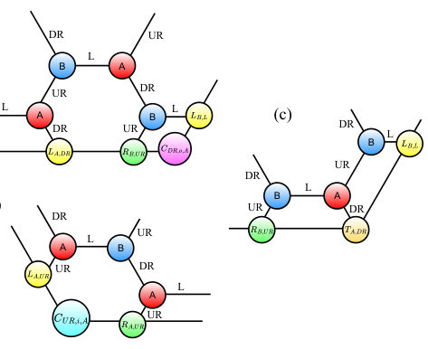
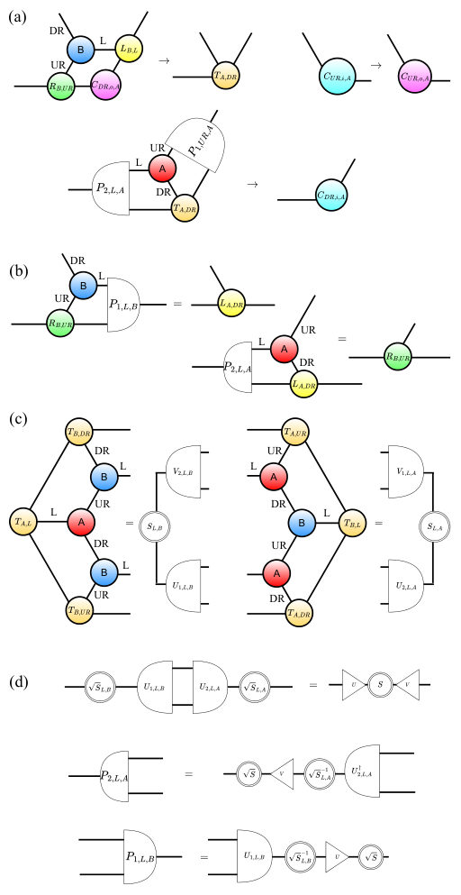
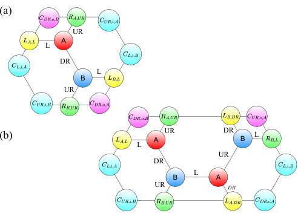
Summary. This paper provides a detailed phase diagram for the J1-J2 XY model on a honeycomb lattice using advanced tensor network methods. It identifies several distinct magnetic phases, including an exotic Ising phase and an incommensurate spiral phase, and clarifies the competition between collinear and dimerized orders.
Why it may be interesting. not directly relevant
Main problem. The study aims to determine the complete ground-state phase diagram and identify the nature of phase transitions in the J1-J2 antiferromagnetic XY model on a honeycomb lattice, specifically addressing uncertainties caused by strong quantum fluctuations.
Main result. The authors identified a sequence of magnetic phases: Néel, Ising, collinear, and incommensurate spiral phases. They found that the collinear phase is energetically preferred over the dimerized state and that the transition from the collinear to the spiral phase is second-order.
Method. The study uses a variational optimization of infinite Projected Entangled Pair States (iPEPS) with a spiral ansatz, utilizing a newly developed honeycomb-specific Corner Transfer Matrix Renormalization Group (CTMRG) algorithm and PyTorch-based automatic differentiation.
Model / system. A spin-1/2 antiferromagnetic XY model on a honeycomb lattice with nearest-neighbor (J1) and next-nearest-neighbor (J2) interactions.
Key observables. Ground-state energy, XY-plane magnetization (M_XY), Z-direction magnetization (M_Z), and the spiral wave vector (q).
Important parameters / regimes. The ratio of next-nearest-neighbor to nearest-neighbor coupling (J2/J1) and the tensor network bond dimension (D).
Assumptions / limitations. The accuracy is limited by the bond dimension (D = 5-6) used in the iPEPS ansatz.
Figures summary. Fig 1 shows the lattice geometry and Brillouin zone; Fig 2 illustrates the iPEPS ansatz and unit cell; Fig 3 and 4 detail the CTMRG algorithm and tensor updates; Fig 6 and 7 present the phase transitions and magnetization changes across different J2/J1 regimes.
Paper structure. The paper introduces the model and lattice, describes the development of the honeycomb CTMRG and spiral iPEPS method, presents the numerical results for the phase diagram and phase transitions, and concludes with a summary of the identified magnetic phases.
We study ground-state properties and phase diagram of the $J_{1}$-$J_{2}$ antiferromagnetic XY model on the honeycomb lattice by means of the developed corner transfer matrix renormalization group algorithm with the two-site unit cell and the infinite spiral projected entangled pair states ansatz. We identify the main phases: Néel, Ising, collinear, and incommensurate spiral phases, as well as the transitions between them, as functions of the ratio $J_{2}/J_{1}$. In the regime of competing types of ordering, we show that the energies of the dimerized states are systematically higher than the energies in the collinear phase. This collinear phase transforms to the incommensurate spiral phase through the second-order phase transition upon a further increase of $J_2/J_1$.
Authors: Wenbo Sun, Shoaib Mahmud, Wei Zhang, Runwei Zhou, Pronoy Das, Dan Jiao, Zubin Jacob
Type: both · Category: quantum information and computing · PDF: https://arxiv.org/pdf/2605.20180v1
Analysis basis: full PDF text, analyzed in chunks
Topic relevance: 🔥 spintronics-quantum-optics interface 5/5 · 🔥 QC/QI experiment 4/5 · correlated / nonlocal dissipation 3/5 · quantum optics experiment 3/5 · interference shaping light 2/5
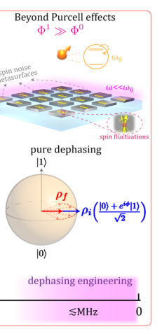
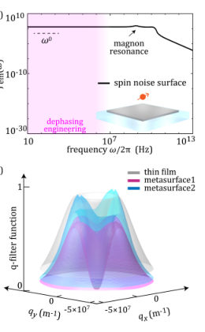
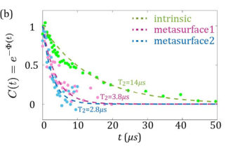
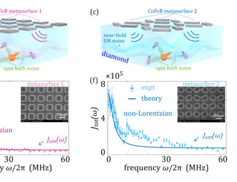
Summary. This paper presents a method to control the pure dephasing of NV center qubits using ferromagnetic metasurfaces. By engineering the low-frequency magnetic noise spectrum through nanophotonic structures, the researchers move beyond traditional Purcell-effect-based control of spontaneous emission. This establishes a new frontier for tailoring light-matter interactions in the near-field regime.
Why it may be interesting. It introduces a new paradigm for open quantum systems where the environment is engineered via near-field momentum filtering of evanescent waves rather than resonant cavity modes, offering a way to manipulate non-unitary dynamics.
Main problem. The paper addresses the lack of control over pure quantum dephasing in spin qubits, moving beyond the well-studied Purcell effect which focuses on spontaneous emission.
Main result. The authors demonstrate that ultra-subwavelength ferromagnetic CoFeB metasurfaces can engineer the low-frequency (MHz) magnetic noise spectrum, effectively controlling the pure dephasing dynamics of NV centers.
Method. The study combines experimental Hahn-echo and CPMG pulse sequence measurements with a theoretical Volume Integral Equation (VIE) framework in reciprocal space to model the nanophotonic dephasing noise spectrum.
Model / system. The system consists of shallow nitrogen-vacancy (NV) center ensembles in diamond placed near periodic, ultra-subwavelength CoFeB (Cobalt-Iron-Boron) metasurfaces, modeled using the Landau-Lifshitz-Gilbert equation and a two-bath model (metasurface noise plus intrinsic spin-bath noise).
Key observables. Coherence function C(t), dephasing function Phi(t), decoherence time T2, and the dephasing noise spectrum J(omega).
Important parameters / regimes. MHz frequency range, ultra-subwavelength near-field regime, NV depth ~30 nm, CoFeB thickness ~5 nm, and high in-plane momentum (q >> k0) evanescent waves.
Assumptions / limitations. Neglecting explicit z-dependence in magnetic susceptibility due to the thinness of the CoFeB layer and approximating the demagnetization tensor as diag(0, 0, 1).
Figures summary. Figure 1 compares Purcell effect engineering to the proposed dephasing engineering; Figure 2 demonstrates the limitations of macroscopic cavities; Figure 4 shows the extraction of intrinsic diamond noise parameters.
Paper structure. The paper introduces the concept of dephasing engineering, describes the fabrication of the CoFeB metasurfaces and NV centers, presents the theoretical VIE framework for noise modeling, details the experimental spectral decomposition results, and concludes by comparing the metasurface approach to traditional cavity-based methods.
One central theme in quantum photonics is tailoring the interactions between atoms/spins and their electromagnetic (EM) environments. Considerable effort has focused on engineering spontaneous emission by shaping EM environments, known as the Purcell effect. However, photonic environment control of pure dephasing, which is a complementary paradigm of non-unitary atom/spin couplings with EM environments, remains largely unexplored. Here, we introduce a nanophotonic approach to modify qubit pure dephasing dynamics. Unlike Purcell engineering that tailors photonic environments at qubit resonance frequencies (typically optical/near-infrared), we develop ultra-subwavelength spin noise metasurfaces for efficient broadband control of low-frequency (e.g., $\sim$MHz) photonic environments far off-resonant with atoms/spins for dephasing engineering. We experimentally demonstrate our approach using lithographically defined CoFeB metasurfaces and shallow nitrogen-vacancy (NV) centers in diamond. Instead of modified spontaneous emission, we observe modified NV pure dephasing dynamics near different spin noise metasurfaces. We further isolate metasurface-controlled dephasing from other dephasing mechanisms (e.g., spin bath) by measuring the NV ensemble dephasing noise spectrum with dynamical decoupling spectral decomposition techniques. Our results establish a new frontier in engineering quantum light-matter interactions with nanophotonic structures.
Authors: Cesare Vianello, Andrea Bardin, Luca Salasnich
Type: theory · Category: statistical mechanics · PDF: https://arxiv.org/pdf/2605.19643v1
Analysis basis: full PDF text, analyzed in chunks
Topic relevance: 🔥 Keldysh / 2PI / non-Gaussian methods 5/5 · methods for driven-dissipative 3/5 · non-equilibrium dynamics 3/5 · Kondo & dissipative impurity 2/5 · correlated / nonlocal dissipation 2/5
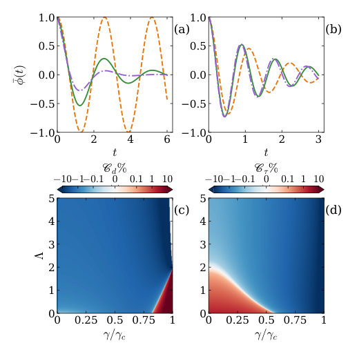
Summary. This paper develops a method to calculate quantum corrections to the semiclassical Langevin equation using the Schwinger-Keldysh formalism. It demonstrates that zero-point fluctuations modify the effective dynamics of macroscopic systems like Josephson junctions. These corrections are shown to be significant enough to be measurable in realistic experimental conditions.
Why it may be interesting. It provides a unified field-theoretic framework for understanding how quantum fluctuations modify classical dissipative dynamics, which is directly applicable to the precision control of superconducting qubits and the study of non-equilibrium dynamics in ultracold gases.
Main problem. Deriving quantum corrections to the semiclassical Langevin dynamics of a dissipative system governed by a macroscopic degree of freedom.
Main result. The authors derive a generalized Langevin equation where quantum corrections to the effective potential and mass are determined by the zero-point energy of fluctuations, showing that these corrections can reach the percent level in superconducting and bosonic junctions.
Method. The study employs the Schwinger-Keldysh formalism and the quantum effective action approach, utilizing a one-loop approximation and Hubbard-Stratonovich transformation to compute corrections.
Model / system. The framework is applied to a general macroscopic particle in a potential subject to Ohmic damping, specifically focusing on the Resistively and Capacitively Shunted Junction (RCSJ) model and elongated bosonic junctions coupled to a phonon bath.
Key observables. Quantum-corrected oscillation frequency, decay rate (damping coefficient), and the variance of fluctuations.
Important parameters / regimes. Mass (m), damping coefficient (gamma), temperature (T), Planck's constant (hbar), Josephson frequency, and the low-temperature/weak-damping regime.
Assumptions / limitations. The derivation is limited to the one-loop level (first order in hbar) and assumes a local potential (adiabatic) approximation and an Ohmic dissipation environment.
Figures summary. Figure 1 illustrates phase dynamics under different damping and particle numbers, and plots the quantum correction factors for frequency and damping as functions of damping and interaction strength.
Paper structure. The paper progresses from a general Keldysh action derivation to a one-loop effective action, establishes a connection to the Ehrenfest theorem, and then applies the results to the RCSJ model and bosonic junctions.
Using the quantum effective action in the Schwinger-Keldysh formalism, we derive quantum corrections to the semiclassical Langevin dynamics of a dissipative system governed by a macroscopic degree of freedom. We discuss the connection with the Ehrenfest theorem and show that, in the low-temperature and weak-damping regime, quantum corrections are determined by the zero-point energy of fluctuations evaluated at the classical underdamped frequency, closely paralleling the conservative case. We apply these general results to the resistively and capacitively shunted superconducting Josephson junction and to an elongated bosonic junction, where quantum corrections can reach the percent level under realistic conditions.
Authors: Emmanuel D. G. U, Roy D. Jara, Jayson G. Cosme
Type: theory · Category: quantum information and computing · PDF: https://arxiv.org/pdf/2605.19477v1
Analysis basis: full PDF text, analyzed in chunks
Topic relevance: 🔥 driven-dissipative phase transition 4/5 · Keldysh / 2PI / non-Gaussian methods 3/5 · methods for driven-dissipative 3/5 · non-equilibrium dynamics 3/5 · Dicke superradiance 2/5 · Tavis-Cummings & cavity-many-emitter 2/5 · correlated / nonlocal dissipation 2/5 · non-equilibrium universality 2/5
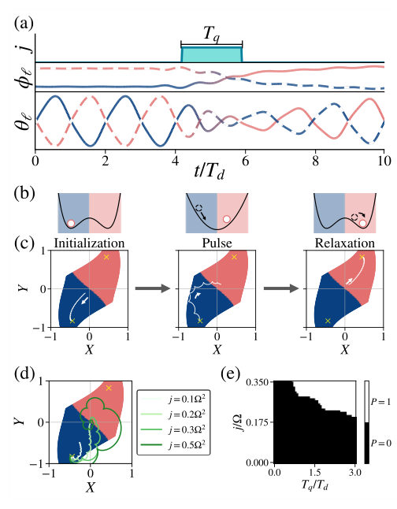
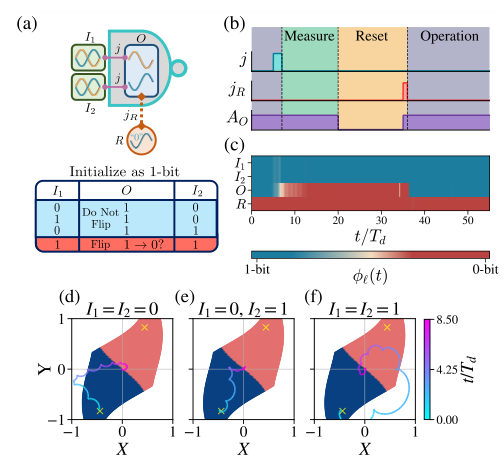
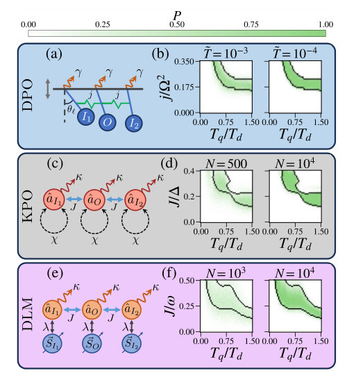
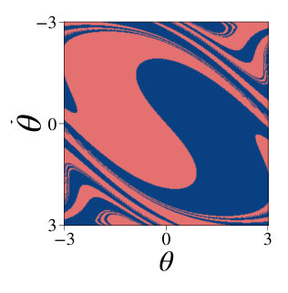
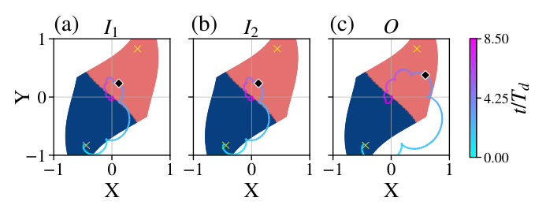
Summary. This paper proposes a method to perform universal logic operations using the stable, symmetry-broken states of driven-dissipative systems. By applying a single coupling pulse, the researchers show that NAND and NOR gates can be implemented in various models, including quantum Kerr oscillators and Dicke lattices, with high robustness to noise.
Why it may be interesting. It provides a bridge between non-equilibrium phase transitions (like discrete time crystals) and functional computation, offering a way to use symmetry-broken states in driven-dissipative systems for robust logic operations.
Main problem. Developing a universal logic gate architecture (NAND and NOR) using classical information encoded in the period-doubled, symmetry-broken states of periodically-driven systems.
Main result. The authors demonstrate that a single-pulse protocol can implement universal logic gates across various platforms (DPO, KPO, and DLM) and show that these operations are robust against both thermal and quantum noise.
Method. The study uses mean-field approximations and the Truncated Wigner Approximation (TWA) to simulate dynamics, alongside Langevin equations to incorporate dissipation-induced fluctuations.
Model / system. The framework applies to networks of coupled dissipative parametric oscillators (DPO), Kerr parametric oscillators (KPO), and the Dicke lattice model (DLM) emulating discrete time crystals.
Key observables. Phase-space trajectories (X, Y), absolute time phase, phase difference (synchronization vs. anti-synchronative), and logic gate success probability.
Important parameters / regimes. Coupling strength (j or J), pulse duration (Tq), driving amplitude (A), dissipation rate (kappa), and particle number (N).
Assumptions / limitations. The mean-field approximation is assumed valid in the thermodynamic limit, and the protocol assumes the ability to perform a reset protocol to re-initialize the output node.
Figures summary. Figure 1 shows the basins of attraction and phase-space trajectories for bit-flips; Figure 2 illustrates the DPO network architecture and NAND gate dynamics; Figure 3 compares the validity regions (true vs. pseudo logic gates) across DPO, KPO, and DLM; Figure 4 shows the reset protocol and phase difference dynamics.
Paper structure. The paper introduces the concept of encoding bits in period-doubled states, describes the single-pulse logic protocol, presents the architecture for NAND/NOR gates, validates the protocol across three different physical models, and analyzes the impact of noise and dissipation.
We propose a general architecture for universal logic operations using NAND and NOR gates on classical information encoded in period-doubled states of periodically-driven systems. The protocol involves applying a single pulse that simultaneously couple two input nodes with an output node. We show that the states of the nodes can be precisely controlled by tuning the coupling strength and pulse duration, allowing for robust logic gate operation. To highlight the universality of the protocol, we demonstrate its applicability on different systems, such as classical networks of dissi- pative parametric oscillators (DPO), quantum networks of Kerr parametric oscillators (KPO), and the periodically-driven open Dicke lattice model (DLM) emulating discrete time crystals (DTCs). We identify the parameter regimes in which the logic gate architecture is valid, and we showcase its robustness in the presence of fluctuations.
Authors: Shengtao Jiang, Jean-Yves Desaules, Marko Ljubotina, Thomas Scaffidi
Type: theory · Category: statistical mechanics · PDF: https://arxiv.org/pdf/2605.19281v1
Analysis basis: full PDF text, analyzed in chunks
Topic relevance: 🔥 non-equilibrium dynamics 4/5 · 🔥 non-equilibrium universality 4/5 · 🔥 scars & prethermalization 4/5 · Rydberg arrays 3/5 · entanglement & information structure 2/5
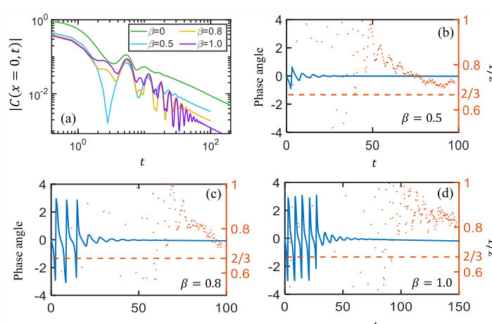
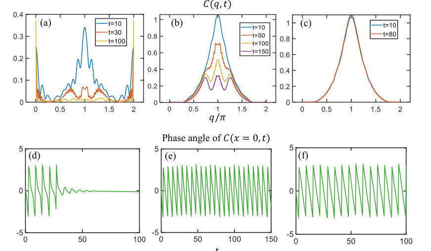
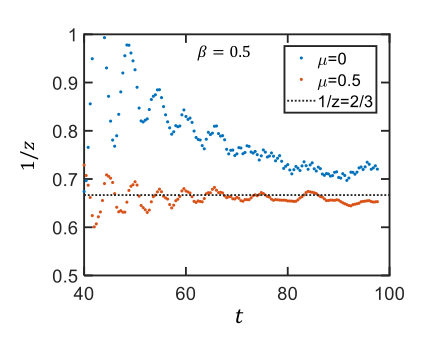
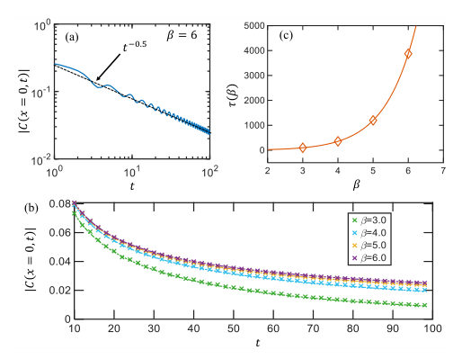
Summary. This paper investigates how the PXP model transitions from coherent magnon dynamics to superdiffusive energy transport as temperature changes. It shows that the late-time KPZ-like behavior emerges from a transfer of spectral weight from high-momentum magnons to long-wavelength modes. This provides a microscopic link between identifiable quasiparticles and anomalous hydrodynamics.
Why it may be interesting. It provides a bridge between microscopic quasiparticle (magnon) physics and macroscopic anomalous hydrodynamics (KPZ), offering a way to understand how many-body scars and coherent structures relate to non-equilibrium transport.
Main problem. Understanding the microscopic mechanism behind the emergence of superdiffusive energy transport (KPZ scaling) in the PXP model and how it connects to coherent magnon dynamics.
Main result. The study identifies a finite-temperature crossover where energy transport shifts from a short-time regime dominated by coherent pi-magnons to a long-time hydrodynamic regime characterized by superdiffusion (z=3/2) via a transfer of spectral weight from q=pi to q=0.
Method. Large-scale tensor network simulations using ITensor, specifically Time-Evolving Block Decimation (TEBD) and imaginary time evolution for thermal density matrices.
Model / system. The PXP chain, an effective Hamiltonian for Rydberg atom arrays in the strong blockade regime, featuring a constraint that prevents adjacent excitations.
Key observables. Energy density correlation function C(x, t), running decay exponent 1/z_eff(t), phase angle, and momentum-space correlation C(q, t).
Important parameters / regimes. Temperature (beta), chemical-potential deformation (mu), damping time scale tau(beta), and the scaling exponent z.
Assumptions / limitations. The short-time dynamics can be approximated by a single magnon band with an activated relaxation form.
Figures summary. Figure 1 illustrates the on-site correlator, phase angle, and running exponent for various temperatures, showing the disappearance of phase winding as temperature increases.
Paper structure. The paper introduces the PXP model and the problem of superdiffusion, presents numerical results showing the temperature-dependent crossover, analyzes the short-time magnon-dominated regime, discusses the long-time hydrodynamic regime, and concludes by reconciling the two regimes through spectral weight transfer.
The PXP chain was recently shown to exhibit superdiffusive energy transport with Kardar-Parisi-Zhang-like scaling, $z\approx3/2$, joining a growing number of spin chains with this exponent. An understanding of how this anomalous hydrodynamics emerges from microscopics is, however, still lacking. In this work, we show that finite-temperature energy transport in this model provides a window into the emergence of superdiffusion. At finite temperature, the energy autocorrelation function exhibits a crossover from short-time coherent dynamics to long-time hydrodynamics. The short-time behavior is dominated by a single magnon band and can be understood analytically. In momentum space, this regime is characterized by spectral weight near $q=π$. The damping time $τ$, which separates the short-time magnon-dominated behavior from the late-time hydrodynamics, grows rapidly upon cooling, consistent with an activated form $τ(β)\sim βe^{Δβ}$ with a gap scale set by the magnon band. At longer times, the spectral weight transfers to $q=0$ and the running decay exponent drifts toward the superdiffusive value $z=3/2$. Finite-temperature energy transport therefore provides a bridge between microscopic magnon physics and late-time superdiffusion in the PXP model.
Authors: Partha Nandi, Giuseppe Vitiello
Type: theory · Category: statistical mechanics · PDF: https://arxiv.org/pdf/2605.19917v1
Analysis basis: full PDF text, analyzed in chunks
Topic relevance: 🔥 driven-dissipative phase transition 4/5 · 🔥 non-equilibrium dynamics 4/5 · non-equilibrium universality 3/5 · entanglement & information structure 2/5 · methods for driven-dissipative 2/5
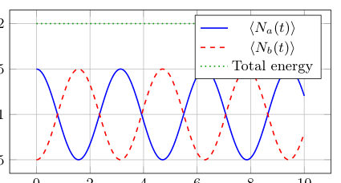
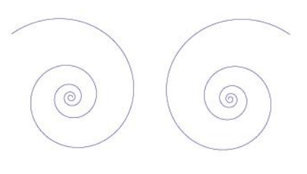
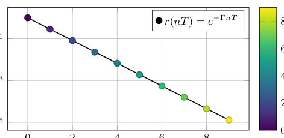
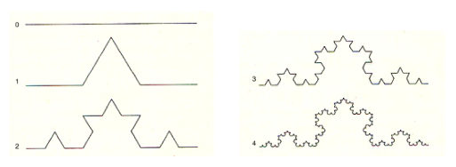
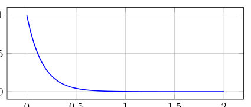
Summary. This paper shows that a closed quantum system can exhibit persistent, periodic oscillations and fractal scaling through the interaction of damped and amplified oscillator sectors. By tracing over the amplified sector, the authors reveal that non-Markovian memory effects drive an emergent temporal order. This mechanism allows for time-crystal-like dynamics without the need for external driving or spontaneous symmetry breaking.
Why it may be interesting. It provides a novel mechanism for time-crystal-like behavior that bypasses conventional equilibrium no-go theorems by utilizing nonequilibrium, non-Markovian dynamics within a globally unitary framework.
Main problem. Investigating whether a closed quantum system can generate persistent, time-crystal-like dynamics and fractal scaling without external periodic driving or equilibrium spontaneous symmetry breaking.
Main result. The authors demonstrate that non-Markovian memory effects and coherent energy exchange between damped and amplified sectors in a dual oscillator framework generate emergent temporal ordering and self-similar fractal trajectories.
Method. The study employs Dirac constraint analysis, Bogoliulyov transformations, and the reduced density matrix formalism to derive non-Markovian dynamics from a globally unitary Hamiltonian.
Model / system. A nonrelativistic (2+1)-dimensional Bateman dual oscillator system featuring spin-induced spatial deformation and a modified symplectic structure, described by a time-independent, Hermitian Hamiltonian with SU(1,1) algebraic properties.
Key observables. Subsystem occupation numbers, energies of the damped and amplified sectors, and the geometric trajectories of observables in the complex plane.
Important parameters / regimes. Oscillator frequency (Omega_0), dissipation/interaction strength (Gamma), non-commutativity parameter (theta), and the scaling exponent (d).
Assumptions / limitations. The system is treated as a closed, globally unitary system via a doubled degrees of freedom approach, assuming initially factorized states and a vacuum state for the amplified sector.
Figures summary. Figure 2 shows logarithmic spiral trajectories in the complex plane; Figure 3 illustrates discrete-time sampling and self-similar scaling of the radial distance; Figure 4 shows the ratio of radial distances.
Paper structure. The paper defines the spin-induced non-commutative phase space, constructs the Bateman dual oscillator Hamiltonian, quantizes the system using Dirac brackets, derives the non-Markovian reduced dynamics, and analyzes the resulting fractal and time-crystal-like temporal structures.
Can a closed quantum system generate persistent time-crystal-like dynamics without external driving? Within the Bateman dual oscillator framework, we show that the answer is affirmative. We consider a nonrelativistic (2+1)-dimensional system in which spin-induced spatial deformation generates an effective Bateman oscillator structure. After quantization, the system is governed by a time-independent Hermitian Hamiltonian describing coherent coupling between damped and amplified oscillator sectors while preserving the total energy of the global doubled system. Tracing over the amplified sector, we derive an effective non-Markovian reduced dynamics for the observable subsystem. The resulting memory effects sustain persistent oscillations of subsystem observables and generate emergent time-crystal-like temporal ordering without external periodic driving or equilibrium spontaneous symmetry breaking. Since the oscillatory behavior originates from nonequilibrium reduced subsystem dynamics rather than equilibrium expectation values of the full Hamiltonian, the mechanism lies outside the assumptions of conventional no-go theorems for equilibrium time crystals. The same dynamics further exhibits logarithmic-spiral trajectories and self-similar fractal scaling, revealing a direct connection between coherent dissipative dynamics, non-Markovian memory effects, and emergent temporal ordering in a globally unitary quantum system. In this specific sense, "watching the growth" of these self-similar structures corresponds to observing the gradual formation of time-crystal-like ordering.
Authors: Sebastian Stengele, Ángela Capel, Li Gao, Angelo Lucia, David Pérez-García, Antonio Pérez-Hernández, Cambyse Rouzé, Simone Warzel
Type: theory · Category: quantum information and computing · PDF: https://arxiv.org/pdf/2605.19640v1
Analysis basis: full PDF text, analyzed in chunks
Topic relevance: 🔥 non-equilibrium dynamics 4/5 · entanglement & information structure 3/5 · driven-dissipative phase transition 2/5 · methods for driven-dissipative 2/5 · scars & prethermalization 2/5 · analog quantum simulation 1/5
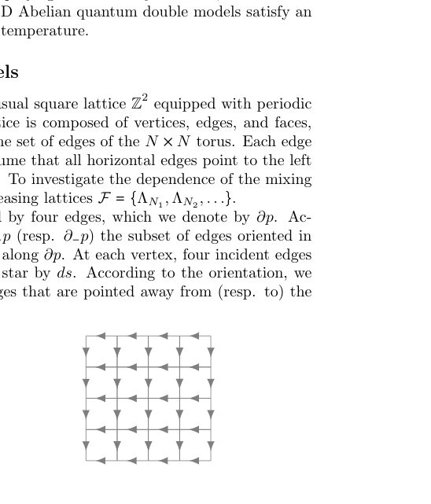
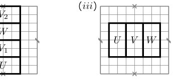
Summary. The paper establishes that 2D Abelian quantum double models undergo rapid mixing under Davies Lindbladian dynamics at any positive temperature. By proving a modified logarithmic Sobolev inequality, the authors show that the system reaches thermal equilibrium in polylogarithmic time relative to the system size.
Why it may be interesting. This work provides a rigorous proof of rapid thermalization for a class of topological models, which is crucial for understanding the stability and dynamics of quantum memory and error-correcting codes under thermal noise.
Main problem. Determining the mixing time of the Davies Lindbladian dynamics for 2D Abelian quantum double models and establishing whether they exhibit rapid mixing.
Main result. The authors prove that 2D Abelian quantum double models satisfy a modified logarithmic Sobolev inequality (MLSI) at any positive temperature, implying rapid (polylogarithmic) mixing.
Method. A multi-scale analysis approach using a Dobrushin-Shlosman type condition and a strong martingale condition for local conditional expectations to bound the MLSI constant.
Model / system. 2D Abelian quantum double models on an N x N square lattice (torus) with a commuting Hamiltonian consisting of star and plaquette operators, evolving under Davies Markov semigroup dynamics.
Key observables. Mixing time (in trace norm), spectral gap, MLSI constant, and relative entropy.
Important parameters / regimes. Inverse temperature (beta), system size (N), and group size (|G|).
Assumptions / limitations. The proof assumes translation invariance and that the jump rates satisfy a specific lower bound relative to the detailed balance condition; it also relies on the validity of the Dobrush and Shlosman condition.
Figures summary. Figure 1 illustrates the N x N lattice on a torus and edge orientations; Figure 2 shows different configurations of overlapping rectangles used in the multi-scale analysis.
Paper structure. The paper first characterizes the kernel and conditional expectations of the Lindbladian, then establishes the Dobrushin-Shlosman condition for the Gibbs state, and finally uses a multi-scale analysis to link a strong martingale condition to the MLSI constant.
We establish rapid mixing for Davies Markov semigroups associated with 2D Abelian quantum double models at any positive temperature. A condition of Dobrushin-Shlosman (DS) type holds at any temperature, and we show that the latter implies a modified logarithmic Sobolev inequality for the Davies Lindbladian. A key step in the argument is to verify a strong martingale condition for the local conditional expectations of the Davies semigroup in the regime of validity of the DS condition.
Authors: João H. Romeiro, Federico A. Roy, Niklas Bruckmoser, Ivan Tsitsilin, Niklas J. Glaser, Christian M. F. Schneider, Gerhard B. P. Huber, Saya A. Schöbe, Johannes Schirk, Florian Wallner, Malay Singh, Julius Feigl, Leon Koch, Lasse Södergren, Max Werninghaus, Stefan Filipp
Type: both · Category: quantum information and computing · PDF: https://arxiv.org/pdf/2605.18962v1
Analysis basis: full PDF text, analyzed in chunks
Topic relevance: 🔥 QC/QI experiment 4/5 · entanglement & information structure 3/5 · non-equilibrium dynamics 3/5 · analog quantum simulation 2/5 · correlated / nonlocal dissipation 2/5
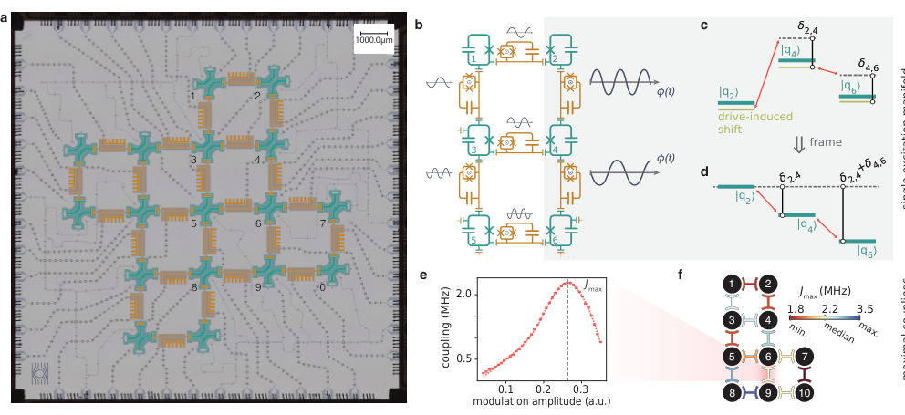
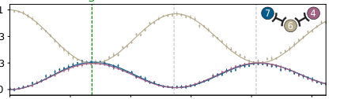
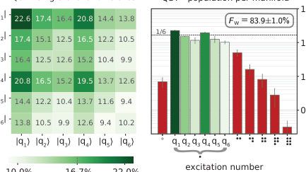
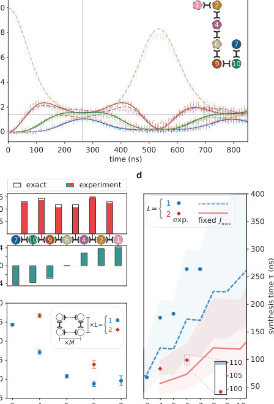
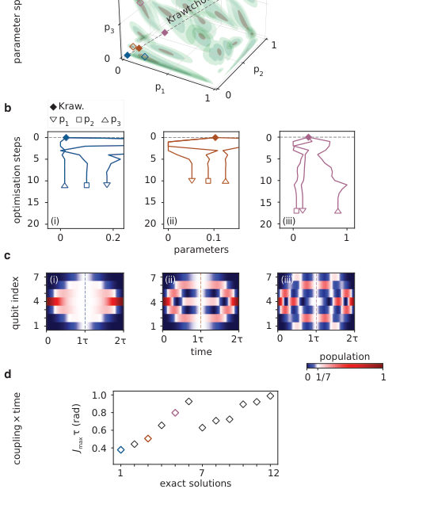
Summary. This paper presents a method to generate W states in superconducting qubit lattices in a single step, bypassing the need for slow, sequential gate sequences. By using simultaneous parametric drives, the researchers achieved fast entanglement distribution that scales efficiently in 2D. This approach significantly reduces the time required for entanglement generation, making it more robust against decoherence.
Why it may be interesting. This work is highly relevant for many-body dynamics and open quantum systems as it demonstrates a method to engineer complex, non-local Hamiltonian dynamics and explores the robustness of multipartite entanglement against dephasing and parameter fluctuations.
Main problem. Generating large-scale multipartite entanglement, specifically W states, in superconducting architectures is difficult due to the high circuit depth and time overhead required by sequential two-qubit gates.
Main result. The authors demonstrated a scalable, single-step method to generate W states in 2D superconducting lattices, achieving a 6-qubit W state in a 3x2 lattice with 83.9% fidelity in just 99 ns.
Method. The protocol uses engineered simultaneous AC flux modulations to induce parametric exchange interactions, solving an inverse eigenvalue problem to determine the required couplings and on-site energies.
Model / system. A 2D superconducting transmon qubit lattice featuring 17 qubits and 24 tunable couplers, modeled using a single-excitation manifold Hamiltonian with time-dependent parametric drives.
Key observables. W state fidelity (Fw), state delocalization (D), qubit populations, and entanglement witness operators.
Important parameters / regimes. Coupling strengths (J) between 1.18 MHz and 3.5 MHz, synthesis time (tau), and the use of Krawtchouk Hamiltonian families for scaling.
Assumptions / limitations. The system is restricted to the single-excitation manifold; the rotating-wave approximation (RWA) is applied; errors are dominated by qubit dephasing and readout (SPAM) errors.
Figures summary. Fig 1 shows the 17-qubit processor and circuit diagram; Fig 2 illustrates 1D W state generation and energy levels; Fig 3 demonstrates 2D lattice construction and population dynamics; Fig 4 shows 1D scaling and performance; Fig 5 displays parameter space optimization and population dynamics.
Paper structure. The paper introduces the challenge of sequential gate overhead, presents the theoretical framework for single-step generation via the inverse eigenvalue problem, details the experimental implementation on a 2D transmon lattice, demonstrates results for both 1D chains and 2D lattices, and concludes with scaling analysis and error characterization.
The reliable generation of multi-qubit entanglement is a prerequisite for large-scale quantum information technologies. In particular, W states are a valuable resource owing to their resilience under local loss or measurement. Nevertheless, preparing these states with sequential two-qubit gates often requires substantial time overhead. By contrast, engineered simultaneous interactions enable fast entanglement generation, even in qubit systems with limited nearest-neighbour connectivity. Here, we demonstrate a set of fast and robust operations for coherently distributing a single excitation across a lattice of arbitrary size, thereby directly generating W states from initial product states. In 2D lattices, the excitation propagates along both directions simultaneously, such that the total entanglement time scales only with the largest dimension. We exploit this property to prepare a six-qubit W state in a 3$\times$2 superconducting lattice within 99 ns, achieving a tomographic fidelity of 83.9$\pm$1.0%. We then extend the protocol to create entanglement across chains of up to seven qubits, with the largest W state generated in 264 ns with a fidelity of 79.6$\pm$1.3%.
Authors: Dror Orgad
Type: theory · Category: strongly correlated electrons · PDF: https://arxiv.org/pdf/2605.18970v1
Analysis basis: full PDF text, analyzed in chunks
Topic relevance: 🔥 spintronics-quantum-optics interface 4/5 · Keldysh / 2PI / non-Gaussian methods 3/5 · correlated / nonlocal dissipation 2/5 · non-equilibrium dynamics 2/5 · quantum measurements 2/5 · QC/QI experiment 1/5
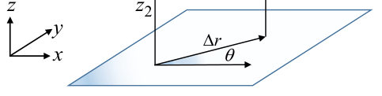
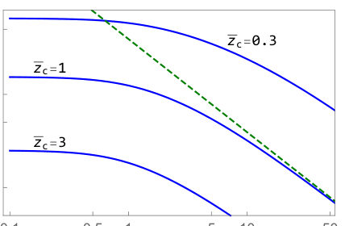
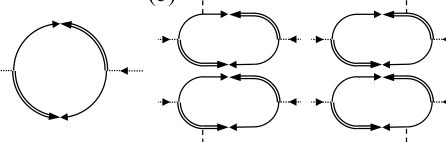
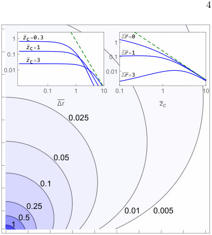
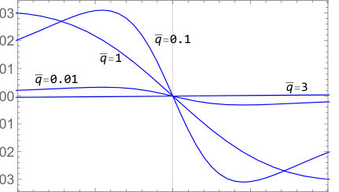
Summary. This paper calculates the magnetic noise signatures produced by Gaussian superconducting fluctuations in 2D and 1D systems. It demonstrates how these fluctuations can be distinguished from vortex dynamics through specific spatial and frequency patterns detectable by NV center magnetometry. The findings provide a roadmap for using nanoscale sensors to probe the nature of superconducting fluctuations in high-Tc materials.
Why it may be interesting. The paper explores the dynamics of a fluctuating order parameter and the resulting noise spectra, which is relevant to understanding non-equilibrium dynamics and the interaction between a quantum sensor and a many-body system.
Main problem. Identifying testable signatures of Gaussian superconducting fluctuations in nonlocal magnetic noise to distinguish them from vortex-liquid-driven fluctuations.
Main result. The study predicts specific frequency, spatial, and angular dependencies of magnetic noise, including a quadrupolar structure under electric fields, which are detectable by NV center magnetometry.
Method. Analytical calculation of the two-point magnetic noise spectrum using the stochastic time-dependent Ginzburg-Landau (TDGL) theory and Green's functions.
Model / system. The model covers 2D superconducting systems (like cuprates and NbSe2) and 1D superconducting wires, utilizing the TDGL framework in the Gaussian approximation.
Key observables. Two-point magnetic noise spectrum (Szz), current-current correlations, and angular noise anisotropy.
Important parameters / regimes. Temperature relative to Tc, sensor height (zc), lateral separation (delta r), electric field strength (E), and coherence length (xi).
Assumptions / limitations. Gaussian approximation (neglecting the quartic term in free energy), particle-hole symmetry (or its breaking), and the use of the TDGL framework for critical dynamics.
Figures summary. Figure 1 shows the 2D system geometry and sensor positions; Figure 2 provides a diagrammatic representation of the theory; Figure 3 plots the dimensionless equilibrium noise spectrum versus frequency.
Paper structure. The paper introduces the problem of identifying fluctuations, develops the TDGL-based analytical framework for equilibrium and non-equilibrium noise, analyzes spatial and frequency scaling in 2D and 1D systems, and concludes with experimental detectability estimates using NV centers.
We calculate the two-point magnetic noise spectrum arising from Gaussian superconducting fluctuations, a quantity directly measurable by spin qubit pairs such as nitrogen vacancy centers in diamond. The analysis utilizes the time-dependent Ginzburg-Landau theory, reflecting the direct contribution of fluctuating Cooper pairs to the current correlations and consequent magnetic noise. We treat both two-dimensional systems and wires, considering them in equilibrium and under a uniform electric field. The signal is expected to be strongest in high-temperature superconductors, and we contrast our findings with the predicted signatures of a vortex liquid to offer an additional route to elucidate the nature of fluctuations in these systems.
Authors: Luis Lozano
Type: both · Category: disordered systems and neural networks · PDF: https://arxiv.org/pdf/2605.19381v1
Analysis basis: full PDF text, analyzed in chunks
Topic relevance: 🔥 QC/QI experiment 4/5 · 🔥 non-equilibrium dynamics 4/5 · methods for driven-dissipative 2/5 · non-equilibrium universality 2/5 · scars & prethermalization 2/5
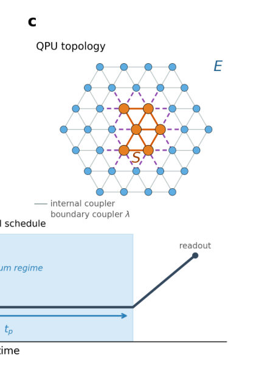
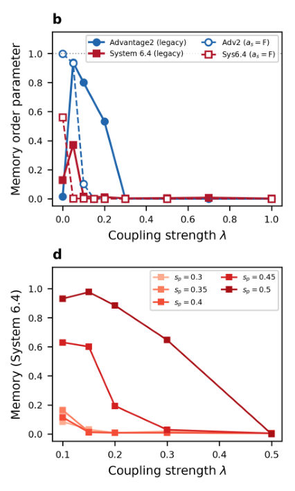
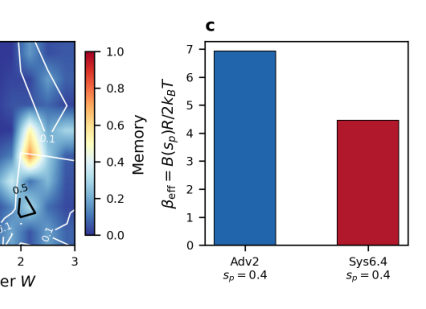
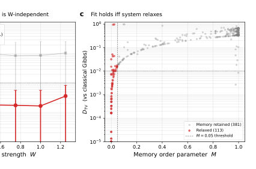
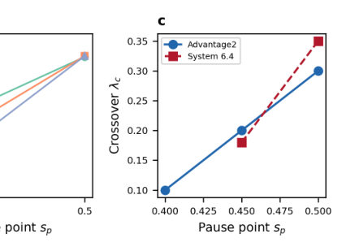
Summary. This paper introduces a new diagnostic protocol to validate whether programmable quantum annealers are sampling from the intended thermal distribution. By using both a memory parameter and a distance-to-reference metric, the authors can detect 'wrong-basin' trapping that standard benchmarks miss. The work reveals that relaxation is driven by environment size and coupling strength but can be arrested by quenched disorder.
Why it may be interesting. This paper is highly relevant to open quantum systems and many-body dynamics as it characterizes how a finite-size environment acts as a non-universal bath and investigates the transition between memory-retaining and relaxed regimes in a programmable quantum device.
Main problem. Determining the conditions under which reverse annealing erases initial-state memory in quantum annealers and developing a diagnostic to detect 'wrong-basin' dynamical trapping where the system relaxes but fails to reach thermal equilibrium.
Main result. The authors developed a two-observable diagnostic (Memory Order Parameter and Total Variation Distance) that successfully identifies non-thermal trapping; they also found that quenched disorder arrests relaxation and that QPU relaxation dynamics are better matched by non-local classical updates than local Glauber dynamics.
Method. The study uses reverse-annealing protocols on D-Wave Advantage2 and System 6.4 QPUs, comparing experimental subsystem marginals against calibrated Boltzmann references, exact diagonalization, and classical Monte Carlo (Glauber and Parallel Tempering) simulations.
Model / system. A subsystem of 6 qubits coupled to an environment of up to 50 qubits via programmable couplers, governed by a time-dependent transverse-field Ising Hamiltonian with longitudinal disorder.
Key observables. Memory Order Parameter (M), Total Variation Distance (DTV) to a conditional-Boltzmann reference, and effective inverse temperature (beta_eff).
Important parameters / regimes. Environment size (|E|), coupling strength (lambda), quenched disorder strength (W), pause depth (sp), and pause time (tp).
Assumptions / limitations. The analysis is limited to small subsystem sizes (N <= 12) for exact diagonalization comparisons, and the study focuses on subsystem-level dynamics rather than the global QPU state.
Figures summary. Figure 1 shows the reverse-anneal protocol and subsystem-environment partition; Figure 2 illustrates relaxation as a function of environment size, coupling, and pause depth; Figure 3 shows how disorder arrests relaxation; Figure 4 demonstrates the diagnostic's ability to separate relaxation regimes and identify trapping.
Paper structure. The paper introduces the problem of non-thermal trapping, describes the experimental setup and reverse-annealing protocol, presents the development of the two-observable diagnostic, analyzes the drivers of relaxation (size, coupling, disorder), compares QPU dynamics to classical local/non-local models, and concludes with a validation protocol.
Programmable quantum annealers are used as open-system samplers, but it is unclear when reverse annealing erases preparation memory and what the readout represents. Here we implement a subsystem-environment protocol on two D-Wave quantum annealers, varying environment size, coupling, disorder, preparation, geometry and QPU generation. A six-qubit subsystem becomes initial-state independent when the environment is large or strongly coupled, while quenched disorder and atypical environment states arrest relaxation. Pairing the memory order parameter with the distance to a calibrated conditional-Boltzmann reference yields a diagnostic that flags rare wrong-basin trapping memory loss alone misses; memory-retaining conditions stay far from the reference (median 0.35). Relaxed ferromagnetic readouts are near-deterministic, so small distances there are a consistency check, not a thermometric test. In a mixed-frustration benchmark, the local-update model practitioners assume mispredicts QPU relaxation roughly sevenfold, whereas non-local classical sampling recovers it. We provide a subsystem-level validation protocol for quantum-annealer sampling.
Authors: Chandraniva Guha Ray, Aikya Banerjee, P. K. Mohanty
Type: theory · Category: statistical mechanics · PDF: https://arxiv.org/pdf/2605.20160v1
Analysis basis: full PDF text, analyzed in chunks
Topic relevance: 🔥 non-equilibrium dynamics 4/5 · 🔥 non-equilibrium universality 4/5 · driven-dissipative phase transition 3/5 · methods for driven-dissipative 3/5
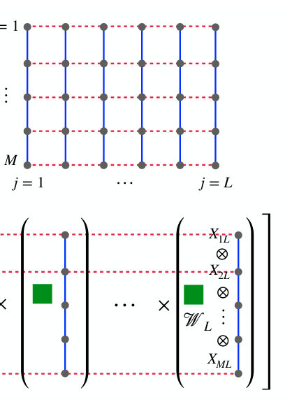
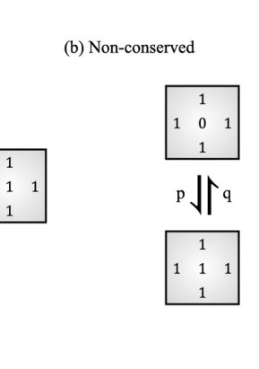
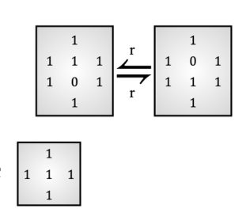
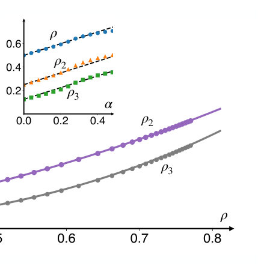
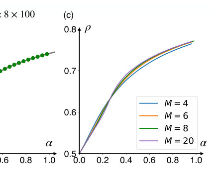
Summary. This paper presents a new mathematical framework to extend the Matrix Product Ansatz to two-dimensional stochastic systems. By applying it to a new model called NAEM, the authors find exact solutions for particle density and currents, revealing a specific type of absorbing phase transition and a link to equilibrium hard-core lattice gases.
Why it may be interesting. This work provides a rare exact solution for a 2D non-equilibrium system, which is highly relevant for understanding many-body dynamics and the development of tensor-network-like approaches for non-equilibrium steady states.
Main problem. The difficulty of generalizing the Matrix Product Ansatz (MPA) from one dimension to two dimensions to find exact steady-state solutions for non-equilibrium stochastic processes.
Main result. The authors introduce a 2D MPA framework and apply it to the Non-conserved Assisted Exclusion Model (NAEM), demonstrating an absorbing phase transition with an order-parameter exponent of beta = 3 and a mapping to the equilibrium hard-square lattice gas.
Method. The study uses a 2D Matrix Product Ansatz where the lattice is treated as a series of rods, combined with a transfer matrix method and algebraic reduction of the master equation.
Model / system. The Non-conserved Assisted Exclusion Model (NAEM) on a 2D square lattice, featuring constrained hopping (assisted by neighbors) and local birth-death dynamics (at sites with all neighbors occupied).
Key observables. Steady-state particle density, density moments, particle currents (Jx, Jy), and the activity order parameter.
Important parameters / regimes. The birth-death ratio alpha (p/q), the hopping rate r, and the critical density rho_c = 1/2.
Assumptions / limitations. The 2D construction assumes a rod-like decomposition of the lattice and relies on the restriction of the configuration space to states where no two adjacent sites are vacant (N00 = 0).
Figures summary. Figure 1 shows the 2D MPA schematic; Figure 3 illustrates NAEM dynamics; Figure 5 shows density plots for different system widths; Figure 6 displays currents and activity as functions of alpha.
Paper structure. The paper introduces the 2D MPA framework, defines the NAEM model and its dynamics, provides the exact 1D and 2D mathematical solutions, analyzes phase transitions and scaling in the conserved limit, and concludes with a mapping to equilibrium lattice gases.
Matrix product ansatz (MPA) is a powerful framework for constructing exact steady state weights of one dimensional non-equilibrium stochastic processes; but its generalization to higher dimensions is limited. Here, we introduce the MPA formalism for two dimensions (2D). As a concrete application, we introduce and exactly solve a non-conserved assisted exclusion model (NAEM) in one and two dimensions with constrained hopping and local birth-death dynamics: a particle can hop to a neighbouring site only when exactly one of its neighbouring sites is vacant, while creation and annihilation occur exclusively at sites whose neighbours are all occupied. The MPA yields exact steady-state weights and provides a systematic method to compute observables such as density moments and particle currents. In the particle-conserving limit, the system undergoes an absorbing phase transition at the critical density $ρ_c=\frac12$ with order-parameter exponent $β=3$. We further show that the steady state of the NAEM maps exactly onto the well-studied hard-square lattice gas with nearest-neighbour exclusion, thereby providing a nonequilibrium dynamical route to realizing equilibrium states of constrained lattice gases. Our work generalizes matrix-product methods beyond one dimension, establishing a systematic approach to exact solutions of interacting stochastic systems in 2D.
Authors: Neil Dowling, Xhek Turkeshi, Jacopo De Nardis, Guglielmo Lami
Type: theory · Category: quantum information and computing · PDF: https://arxiv.org/pdf/2605.18943v1
Analysis basis: full PDF text, analyzed in chunks
Topic relevance: 🔥 entanglement & information structure 4/5 · driven-dissipative phase transition 3/5 · methods for driven-dissipative 3/5 · non-equilibrium dynamics 3/5
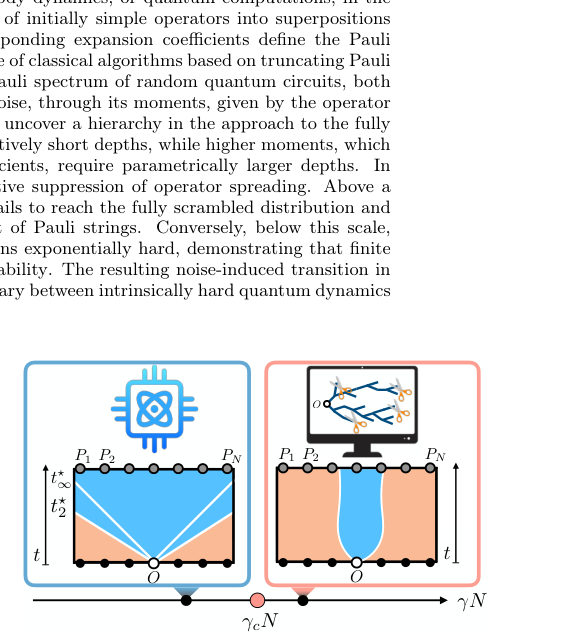
Summary. This paper identifies a phase transition in the complexity of quantum operators induced by local noise. It shows that while low noise levels allow for exponential complexity, sufficiently high noise arrests operator spreading, making the dynamics classically simulable. The findings connect operator scrambling properties directly to the threshold for classical simulation in noisy quantum circuits.
Why it may be interesting. This paper is highly relevant for researchers in open quantum systems and many-body dynamics as it provides a microscopic, analytical description of how dissipation competes with unitary scrambling to fundamentally alter the complexity of quantum evolution.
Main problem. Determining the boundary between classically simulable and intractable quantum dynamics in the presence of local noise, specifically how noise affects the scrambling of operators and the Pauli spectrum.
Main result. The authors identify a noise-induced transition in operator complexity: above a critical error rate, noise arrests operator spreading into a sparse, simulable regime, whereas below this threshold, the system remains exponentially hard to simulate.
Method. The study uses Weingarten calculus for Haar-random averages, maps the circuit dynamics to an Ising-like statistical mechanics model, and employs replica tensor network contractions and Pauli truncation simulations.
Model / system. Random quantum circuits, specifically the Random Matrix Product Unitary (RMPU) model and 1D/2D brickwork circuits, subject to local depolarizing noise.
Key observables. Pauli spectrum distribution, Pauli moments (mu_k, nu_k), Operator Stabilizer Renyi Entropies (OSE), and Mean Squared Error (MSE) of Pauli truncation.
Important parameters / regimes. Error per cycle (gamma), circuit depth (t), number of qubits (N), and the scrambling time (tau).
Assumptions / limitations. The statistical mechanics mapping is strictly valid in the large-dimension limit (large d) where weights are positive definite; noise is modeled as local depolarizing channels.
Figures summary. Figure 1 shows the hierarchy of scrambling in noiseless circuits and the arrest of spreading in noisy circuits; Figure 2 illustrates the circuit architectures (brickwork and RMPU); Figure 5 and 6 demonstrate the Pauli spectrum convergence and the MSE transition across the critical noise threshold.
Paper structure. The paper introduces the problem of operator scrambling, defines the RMPU and noise models, develops a statistical mechanics mapping via Weingarten calculus, analyzes the noiseless scrambling hierarchy, identifies the noise-induced transition, and validates the results via numerical simulations and error scaling analysis.
The complexity of simulating quantum many-body dynamics, or quantum computations, in the Heisenberg picture is governed by the scrambling of initially simple operators into superpositions of exponentially many Pauli strings. The corresponding expansion coefficients define the Pauli spectrum, whose structure controls the performance of classical algorithms based on truncating Pauli expansions. Here we determine the finite-depth Pauli spectrum of random quantum circuits, both in the noiseless case and in the presence of local noise, through its moments, given by the operator stabilizer Rényi entropies. In noiseless circuits, we uncover a hierarchy in the approach to the fully scrambled regime: low moments equilibrate at relatively short depths, while higher moments, which are sensitive to rare, large-amplitude Pauli coefficients, require parametrically larger depths. In noisy circuits, scrambling competes with an effective suppression of operator spreading. Above a critical error per cycle $γ_c N=\mathcal{O}(1)$, the operator fails to reach the fully scrambled distribution and remains supported on an atypically sparse subset of Pauli strings. Conversely, below this scale, we rigorously show that classical simulation remains exponentially hard, demonstrating that finite noise does not automatically imply classical simulability. The resulting noise-induced transition in operator complexity therefore delineates the boundary between intrinsically hard quantum dynamics and those that remain classically accessible.
Authors: Alok Nath Singh, Rafael Sánchez, Andrew N. Jordan
Type: theory · Category: other · PDF: https://arxiv.org/pdf/2605.19001v1
Analysis basis: full PDF text, analyzed in chunks
Topic relevance: 🔥 quantum measurements 4/5 · correlated / nonlocal dissipation 3/5 · non-equilibrium dynamics 3/5 · methods for driven-dissipative 2/5
Summary. This paper demonstrates that spatially structured continuous measurement can be used to engineer transport in a triple-quantum-dot chain. By tuning the measurement strengths of a QPC, one can enhance the tunneling current and control the occupation of the central barrier dot. The study identifies an optimal measurement configuration and shows that near-optimal performance can be achieved with simple local readout.
Why it may be interesting. It provides insights into using measurement-induced dephasing as a control tool for transport, which is highly relevant to researchers working on open quantum systems and the control of quantum dynamics via backaction.
Main problem. Investigating how continuous, global quantum measurement via a QPC affects nonequilibrium transport, specifically controlling barrier occupation and tunneling current in a triple-quantum-dot system.
Main result. Global measurement with structured dephasing can significantly improve barrier occupation and tunneling current, with an optimal configuration identified that maximizes steady-state current.
Method. The study uses a Stochastic Master Equation (SME) in Itô form and Lindblad superoperators to model the dynamics of the TQD under continuous monitoring and reservoir coupling.
Model / system. A triple-quantum-dot (TQD) chain (Left, Center, Right) acting as a discrete tunnel barrier, coupled to two thermal reservoirs and monitored by a Quantum Point Contact (QPC) with tunable measurement strengths.
Key observables. Particle current (It), central dot occupation (rho_CC), and measurement-induced dephasing rates (D_jk).
Important parameters / regimes. Tunneling rates (Gamma_L, Gamma_R), hopping (Omega), energy detuning (Delta), and measurement strengths (gamma_i).
Assumptions / limitations. Large voltage bias limit, Coulomb blockade regime (at most one electron), and the regime where Omega is much smaller than other energy scales.
Figures summary. Figure 1 shows the TQD schematic; Figure 4 plots central dot occupation and current as functions of dephasing rates; Figure 6 shows the time evolution of dot populations and current for individual trajectories and ensemble averages.
Paper structure. The paper introduces the TQD system and measurement scheme, defines the mathematical framework using SME, analyzes various measurement regimes (local vs. global, strong vs. weak), identifies optimal configurations for transport enhancement, and concludes with sensing potential.
We investigate nonequilibrium transport in a triple-quantum-dot (TQD) system, where the central dot acts as a discrete tunnel barrier, subject to continuous monitoring by a quantum point contact (QPC) that is capacitively coupled to all three dots with independently tunable strengths. We show that this global measurement scheme affects transport in a qualitatively distinct manner from single-site measurement. By engineering structured dephasing, measurement provides a significant improvement in the barrier occupation and tunneling current. In the strong-measurement limit, the steady state becomes independent of the underlying Hamiltonian parameters, and the barrier occupation can approach 1/2 for suitable measurement configurations. We identify an optimal measurement configuration that maximizes the steady-state current and show that near-optimal performance can be achieved with a simple central-dot readout scheme.
Authors: Małgorzata Strzałka, Katarzyna Roszak
Type: both · Category: quantum information and computing · PDF: https://arxiv.org/pdf/2605.19047v1
Analysis basis: full PDF text, analyzed in chunks
Topic relevance: 🔥 QC/QI experiment 4/5 · correlated / nonlocal dissipation 3/5 · quantum measurements 3/5 · spintronics-quantum-optics interface 2/5
Summary. This paper investigates how the quantum nature of environmental noise affects the performance of quantum algorithms. By running Deutsch's algorithm in multiple cycles, the authors demonstrate that quantum correlations in the environment lead to measurable differences in outcome probabilities compared to standard classical noise models. The findings are supported by both IBM Quantum processor experiments and simulations of NV center spin qubits.
Why it may be interesting. It provides a method to experimentally distinguish between classical noise models and true quantum-correlated noise by looking for signatures of environmental memory and back-action in multi-cycle quantum circuits.
Main problem. Determining how the 'quantumness' of an environment (system-environment correlations and back-action) manifests in the results of quantum algorithms, specifically distinguishing between classical Kraus-based noise and full quantum noise models.
Main result. Running Deutsch's algorithm in two cycles reveals stark differences between classical and quantum noise models, specifically a qualitative change in measurement outcomes for constant functions and a slowing of decoherence for balanced functions. These effects were experimentally validated on an IBM Quantum processor.
Method. The authors compare a full density matrix approach (quantum environment) with a Kraus operator approach (classical environment) using two cycles of Deutsch's algorithm, with experimental validation on IBM superconducting qubits and theoretical simulations of NV center spin qubits.
Model / system. The study uses Deutsch's algorithm as a proxy for complex algorithms, applied to superconducting transmon qubits (IBM Heron r2) and NV center spin qubits interacting with a nuclear spin bath of 32 13C isotopes.
Key observables. Measurement probabilities of qubit A in the {0, 1} basis, conditional probabilities after one and two algorithm cycles, and decoherence factors.
Important parameters / regimes. Function types (constant vs. balanced), number of intervening qubits (N), decoherence time (t), and initial environmental polarization (p).
Assumptions / limitations. The noise is limited to pure dephasing; there is no energy exchange/relaxation; there are no initial correlations between the system and environment; and the environments for separate qubits are non-interacting.
Figures summary. Figure 1 shows the algorithm flowchart; Figures 2 and 3 compare conditional and absolute probabilities for classical vs. quantum noise; Figures 4-6 illustrate results for NV centers and varying qubit distances; Figures 7-9 detail the multi-cycle circuit and probabilities vs. decoherence time.
Paper structure. The paper introduces the problem of quantum vs. classical noise, defines the two-cycle Deutsch algorithm framework, presents the mathematical derivation for both noise models, provides experimental validation using IBM Quantum hardware, and extends the analysis to NV center spin systems.
We use Deutsch's algorithm as a stand in for more complex quantum algorithms in order to determine how quantum properties of an environment manifest themselves in results that can be obtained on quantum computers. We model pure dephasing in two different ways; one keeps the full density matrix of the qubits and environments (quantum) while the other uses Kraus operators (classical). We find that a single run of the algorithm yields the same effect in both cases, but running the algorithm twice leads to stark differences. Taking correlations and interplay between different decoherence processes into account leads to a slowing of decoherence effects for balanced functions. For constant functions, the effect is much more pronounced, and there is a qualitative change in the dependence of measurement outcomes on decoherence. We present results obtained on one of the IBM Quantum processors, which fully reproduce the predicted effect regardless of the assumptions made in the derivation. We further illustrate the findings on NV center spin qubits, which show more complex behavior due to a small size of the environment.
Authors: Alex Pozzoli, Stefano Carsi, Andrea Abba, Alessia Allevi
Type: experiment · Category: quantum information and computing · PDF: https://arxiv.org/pdf/2605.19980v1
Analysis basis: full PDF text, analyzed in chunks
Topic relevance: 🔥 QC/QI experiment 4/5 · 🔥 quantum optics experiment 4/5 · quantum measurements 3/5
Summary. The researchers developed a digital-first detection chain using FPGAs to perform real-time signal processing on Silicon Photomultipliers. This system allows for high-fidelity photon-number resolution in the mesoscopic regime, outperforming traditional analog integrators and enabling the characterization of quantum correlations in high-intensity light states.
Why it may be interesting. This work is highly relevant to quantum optics and quantum information as it provides a scalable, high-speed hardware solution for detecting mesoscopic quantum states, which is critical for developing robust quantum networks and continuous-variable quantum communication.
Main problem. Developing a stable, digital photon-number-resolving (PNR) detection chain for quantum communication protocols involving mesoscopic states of light, while overcoming SiPM limitations like pile-up and dark counts.
Main result. The implementation of an FPGA-based digital pipeline enables high-fidelity PNR detection for mesoscopic states, maintaining high visibility (v > 0.9) up to 15 photons and allowing for reconstruction of nonclassical correlations in twin-beam states.
Method. A digital signal processing pipeline using an FPGA for real-time baseline subtraction, digital deconvolution (pole-zero compensation), and charge integration is applied to signals from various SiPM models.
Model / system. The experimental platform consists of Silicon Photomultipliers (SiPMs) coupled to a 14-bit, 1 Gs/s digital acquisition system, using both classical coherent states and quantum twin-beam states generated via spontaneous parametric down-conversion.
Key observables. Visibility (v), Figure of Merit (FoM), Fano factor (F), correlation coefficients (R and Gamma), and photon-number distribution reconstruction.
Important parameters / regimes. Mesoscopic intensity regime (up to ~80 photons), pixel pitch (25 and 50 micrometers), acquisition rates (500 kHz to 20 MHz), and integration gate window (10-20 ns).
Assumptions / limitations. Uses Bernoullian detection models to relate detected photons to actual photon numbers; assumes the primary performance degradation at high photon numbers is due to peak overlap and pile-up.
Figures summary. Figure 1 shows the experimental setups and block diagram; Figure 2 displays pulse-height spectra and the decline of visibility with increasing photon number; Figure 3 compares visibility and FoM across different SiPM models and acquisition rates; Figure 5 illustrates the Fano factor and correlation parameters for different detectors.
Paper structure. The paper introduces the need for digital PNR detection, describes the hardware and FPGA-based digital pipeline, presents a systematic comparison of different SiPM models and acquisition modes, and evaluates the performance limits using classical and quantum light states.
We present the characterization of a photon-number-resolving detection chain based on Silicon photomultipliers (SiPM) coupled to a 14 bit, 1 Gs\s digital acquisition system embedding an FPGA-based signal processing pipeline that performs real-time baseline subtraction, digital deconvolution, and charge integration. Three SiPM models manufactured by Hamamatsu are tested and compared in the mesoscopic intensity regime using both classical coherent states and quantum twin-beam states, enabling a systematic investigation of the effects of pixel pitch, pile-up, and photon detection efficiency on the detector performance.
Authors: Mateusz Duda, Thomas Hartwell, Daniel Hodgson, Gin Jose, Pieter Kok, Almut Beige
Type: theory · Category: quantum information and computing · PDF: https://arxiv.org/pdf/2605.19442v1
Analysis basis: full PDF text, analyzed in chunks
Topic relevance: 🔥 interference shaping light 4/5 · correlated / nonlocal dissipation 3/5 · methods for driven-dissipative 2/5 · non-equilibrium dynamics 2/5
Summary. This paper provides an exact analytical framework to describe how a mirror affects the emission of a single-photon emitter in a 1D waveguide. It demonstrates that the presence of the mirror induces non-exponential decay and non-Lorentzian spectra due to photon reabsorption. These findings are crucial for designing controlled photon-emitter interfaces in quantum technologies.
Why it may be interesting. This work provides an exact solution for a non-Markovian open quantum system, offering insights into how structured environments can be used for pulse-shaping and controlling emission rates in quantum networks.
Main problem. Determining the exact non-Markovian dynamics of a single-photon emitter placed in front of a partially-transparent mirror, specifically how the mirror alters the emitter's decay profile and the photon wave packet's properties.
Main result. The authors derive an exact analytical solution showing that the emitter's decay is non-exponential due to photon reabsorption, and they identify regimes of enhanced (superradiant-like) or suppressed (subradiant-like) decay based on the round-trip phase and distance.
Method. The study employs a local-photon approach to solve the Schrodinger equation directly using a Dyson series expansion and validates the analytical results against numerical quantum trajectory simulations.
Model / system. A two-level quantum emitter is placed at a distance d/2 from a partially-transparent mirror in a one-dimensional waveguide, modeled by a Hamiltonian including emitter, field, and mirror interaction terms.
Key observables. Emitter excitation probability, photon wave packet spatial and spectral profiles, photoluminescence spectrum, and photon probability density.
Important parameters / regimes. Emitter-mirror distance (d), coupling rate (g), mirror reflection/transmission coefficients (r_m, t_m), and the photon round-trip time (d/c).
Assumptions / limitations. The emitter is a point-like two-level system, the mirror is infinitely thin, the system is restricted to the single-photon regime, and environmental decoherence is neglected.
Figures summary. Figure 1 shows the physical setup; Figure 2 and 9 illustrate reabsorption processes in the Dyson series; Figure 3 shows the transition from non-exponential to exponential decay; Figure 11 compares analytical results with numerical simulations.
Paper structure. The paper begins by defining the physical system and Hamiltonian, proceeds to derive the exact analytical dynamics using the Dyson series and an iterative approach, explores various physical regimes (Markovian vs. non-Markovian), and concludes with numerical validation and discussion of experimental relevance.
Single-photon emitters in nanophotonic structures are a key building block for many photonic devices with quantum technology applications, like quantum sensors and quantum computers. In this paper, we determine the exact dynamics of a single-photon emitter in a one-dimensional waveguide terminated by a partially-transparent mirror interface, by solving the Schrodinger equation via a local-photon approach. In general, the evolution of the emitter is non-Markovian, characterized by a non-exponential decay profile. The decay can resemble an exponential after a time that is much larger than the emitter-mirror round-trip time and becomes exponential in the Markovian limit, where the round-trip time between the emitter and the mirror is neglected. We also derive the spatial and spectral profile of the emitted photon wave packet and demonstrate how its properties are altered by the environment.
Authors: Riccardo Senese, Fabian H. L. Essler
Type: theory · Category: numerical methods · PDF: https://arxiv.org/pdf/2605.20065v1
Analysis basis: full PDF text, analyzed in chunks
Topic relevance: 🔥 non-equilibrium dynamics 4/5 · entanglement & information structure 2/5 · methods for driven-dissipative 2/5 · non-equilibrium universality 2/5 · scars & prethermalization 1/5
Summary. The paper introduces a Monte Carlo sampling method to efficiently calculate the time-dependent dynamics of interacting integrable models. By sampling the Lehmann representation, the authors bypass the exponential complexity of the full sum, enabling the study of much larger systems and longer timescales. The method is successfully applied to the Lieb-Liniger model and validated against known exact results.
Why it may be interesting. This provides a powerful new numerical tool for studying the long-time dynamics of 1D quantum gases and integrable systems, specifically addressing the computational bottleneck of the exponential complexity in the Lehmann sum.
Main problem. Determining the non-equilibrium dynamics of interacting integrable many-particle systems following quantum quenches is challenging due to the exponential growth of entanglement and the complexity of the Lehmann sum.
Main result. The authors present a Monte Carlo sampling scheme that evaluates the Lehmann representation for time-dependent expectation values, accessing much larger system sizes and longer times than existing methods while validating the Quench Action formalism.
Method. A Monte Carlo sampling scheme using the Metropolis-Hastings algorithm to sample eigenstates according to their spectral weight in both the Direct Sum and Quench Action representations.
Model / system. The study focuses on integrable models, specifically the Transverse-Field Ising Chain (TFIC) and the repulsive Lieb-Liniger (LL) model of bosons on a ring.
Key observables. Time-dependent expectation values of local operators, such as the order parameter and two-point correlation functions.
Important parameters / regimes. Interaction strength (c), system size (L), particle density (n), and quench protocols (e.g., h0 to h).
Assumptions / limitations. The method assumes a one-to-one correspondence between eigenstates and sets of integers/half-integers via Bethe equations; the sign problem may emerge for higher-order correlators or more general setups.
Figures summary. Figure 1 compares MC results with exact results for the TFIC order parameter; Figure 2 shows MC results for the LL model order parameter against BBGKY hierarchy; Figure 5 and 6 demonstrate convergence to the thermodynamic limit and power-law scaling of spectral weight variance.
Paper structure. The paper introduces the problem of non-equilibrium dynamics, presents the new Monte Carlo sampling scheme, benchmarks it against non-interacting models (TFIC) and the BBGKY hierarchy, applies it to the Lieb-Liniger model quench, and discusses the emergence of the sign problem and scaling behaviors.
Determining the dynamics of interacting integrable many-particle quantum systems at finite times after homogeneous quantum quenches is a long-standing challenge. We present a Monte Carlo sampling scheme that numerically evaluates the Lehmann representation for time-dependent expectation values of local operators, allowing us to access system sizes and times significantly beyond the reach of existing methods. The approach accommodates both the full Lehmann sum and the Quench Action formalism. We benchmark against exact results for non-interacting lattice and continuum models and short-time results at weak interactions, finding excellent agreement. We apply the method to quantum quenches from a Bose-Einstein condensate in the repulsive Lieb-Liniger model and determine the time evolution of the order parameter for a wide range of interaction strengths. We discuss the emergence of a "sign problem" for more general dynamical correlators and setups.
Authors: Filiberto Ares, Sara Murciano, Pasquale Calabrese
Type: theory · Category: quantum information and computing · PDF: https://arxiv.org/pdf/2605.18986v1
Analysis basis: full PDF text, analyzed in chunks
Topic relevance: 🔥 entanglement & information structure 4/5 · measurement-induced transitions 3/5 · Keldysh / 2PI / non-Gaussian methods 2/5 · non-equilibrium dynamics 2/5
Summary. This paper provides an analytical derivation of the scaling of fermionic non-Gaussianity in random quantum states. It identifies a critical transition at the Page time, where the non-Gaussianity shifts from vanishing (or small/finite) to extensive, and shows how global U(1) symmetries modify this behavior.
Why it may be interesting. This work is highly relevant for many-body dynamics and open quantum systems as it provides a new diagnostic (non-Gaussianity) for characterizing quantum phases, such as measurement-induced phase transitions, and explores the complexity of preparing typical many-body states.
Main problem. The paper aims to quantify the fermionic non-Gaussianity of typical quantum states and determine how this non-Gaussianity scales with subsystem size and global U(1) symmetries.
Main result. The authors find that for Haar-random states without symmetry, non-Gaussianity vanishes for subsystem sizes below half the total system size and becomes extensive for sizes above half; in the presence of U(1) symmetry, a small but finite non-Gaussianity persists even in the small subsystem regime.
Method. The study utilizes Weingarten calculus, Random Matrix Theory, and the decoupling inequality to compute averages of the relative entropy between reduced density matrices and their Gaussianized counterparts.
Model / system. The system consists of ensembles of Haar-random quantum states of qubit systems (size L), including both standard Haar-random states and states with a global U(1) symmetry, mapped to fermionic operators via the Jordan-Wigner transformation.
Key observables. Fermionic non-Gaussianity (defined as the difference in von Neumann entropies between the reduced density matrix and its Gaussianized version), Rènyi entropies, and the two-point correlation matrix.
Important parameters / regimes. Subsystem size (l), total system size (L), subsystem-to-system size ratio (l/L), Page time (l = L/2), and the U(1) filling fraction (nu).
Assumptions / limitations. The analysis focuses on the leading-order behavior in the thermodynamic limit (L approaching infinity) and assumes the use of the Haar measure for state sampling.
Figures summary. Figure 1 compares analytical predictions to exact averages for entanglement entropy and the fourth moment; Figure 2 shows the agreement of non-Gaussianity predictions with numerical averages; Figure 3 displays the eigenvalue distribution of the Gaussianized density matrix; Figure 6 illustrates non-Gaussianity scaling with different filling fractions.
Paper structure. The paper introduces the problem of non-Gaussianity, defines the mathematical framework using Weingarten calculus, analyzes the two regimes (l/L < 1/2 and l/L > 1/2) for both symmetric and non-symmetric ensembles, and concludes with discussions on potential applications to measurement-induced transitions and state preparation complexity.
We study the fermionic non-Gaussianity in typical quantum states, focusing on Haar random states of qubits with or without a global $U(1)$ symmetry. Using the Weingarten calculus, we derive analytical predictions for the non-Gaussianity, defined as the relative entropy between the reduced density matrix and its Gaussianized counterpart. We identify two regimes controlled by the ratio between the subsystem and the system size, $\ell/L$. For $\ell/L < 1/2$, the non-Gaussianity vanishes in the absence of symmetries, because typical reduced density matrices are exponentially close to the maximally mixed state. In the presence of a global $U(1)$ symmetry, instead, it remains small but finite. By contrast, in the regime $\ell/L > 1/2$, the non-Gaussianity becomes extensive. These results establish the typical scaling of fermionic non-Gaussianity in random states and analyze how this is modified by the presence of global symmetries.
Authors: David Jennings, Kamil Korzekwa, Matteo Lostaglio, Guoming Wang
Type: theory · Category: quantum information and computing · PDF: https://arxiv.org/pdf/2605.19054v1
Analysis basis: full PDF text, analyzed in chunks
Topic relevance: 🔥 methods for driven-dissipative 4/5 · non-equilibrium dynamics 3/5 · correlated / nonlocal dissipation 2/5 · entanglement & information structure 2/5
Summary. This paper presents a new class of quantum algorithms called Quantum Koopman Algorithms that simulate dynamics by evolving an ensemble of observables. It achieves exponential speedups for simulating the covariance dynamics of large free fermion systems and introduces a method to simulate nonlinear classical systems more effectively than existing linearization techniques.
Why it may be interesting. It provides a powerful new toolkit for simulating open quantum systems and nonlinear dynamics, offering a way to bypass the exponential complexity of state-space evolution by exploiting the structure of observable-space dynamics.
Main problem. Developing a unified quantum algorithmic framework (Quantum Koopman Algorithms) to efficiently simulate the dynamics of both linear quantum systems and nonlinear classical systems by evolving observables rather than states.
Main result. The authors introduce Dynamic-QKA and Spectral-QKA strands, demonstrating exponential speedups for free fermion covariance matrix dynamics and providing a novel nonlinear interaction picture that outperforms Carleman linearization for certain nonlinear systems.
Method. The framework uses unitary block-encoding of the Koopman generator, a nonlinear interaction picture for perturbative expansions, and a windowed quantum ODE-solver based on Kaiser-QPE for frequency extraction.
Model / system. The framework is applied to open quantum systems (specifically $N$ free fermions under Lindblad dynamics with quadratic Hamiltonians and linear jump operators) and nonlinear classical ODEs (such as population models with logistic growth).
Key observables. Covariance matrices, quadratic Majorana operators, dissipated heat, decay rates, and Koopman eigenfrequencies.
Important parameters / regimes. Gate complexity $O( ext{polylog}(N))$, the $R$-number (measure of nonlinearity), spectral gap, and the late-time regime where decaying modes are suppressed.
Assumptions / limitations. Requires dynamical closure (an approximately closed set of observables), sparsity/locality of the generator, and that the target time and error are within polylogarithmic bounds of the system size.
Figures summary. Figure 1 shows a phase diagram comparing the convergence of Carleman vs. QKA methods; Figure S1 provides a flowchart for the QKA construction process.
Paper structure. The paper introduces the QKA framework, defines the two strands (Dynamic and Spectral), applies the framework to linear quantum systems (free fermions), extends it to nonlinear classical dynamics via a new interaction picture, and concludes with frequency extraction methods.
We define an observable-space framework of Quantum Koopman Algorithms (QKAs) for simulating the dynamics of both linear quantum and nonlinear classical systems, based on approximately closed sets of observables and efficient coherent encodings of their Koopman-driven evolution. QKAs have two strands: Dynamic-QKA for the initial-value problem of observables dynamics, and Spectral-QKA for the eigenvalue analysis of the Koopman operator. We demonstrate the scope of the framework through several applications. First, for classes of $N$ free fermions linearly coupled to a bath, we construct quantum algorithms with gate cost $O(\mathrm{polylog}(N))$, an exponential improvement over classical methods, and use them to reconstruct heat flows and decay rates. Second, for nonlinear classical dynamics, we introduce a novel nonlinear interaction-picture quantum algorithm that enables perturbative expansions around solvable nonlinear reference flows, going beyond existing approaches that only apply to weakly nonlinear systems. Third, we develop spectral methods for extracting eigen-frequencies of late-time nonlinear dynamics, introducing a windowed quantum ODE-solver. Our results identify the Koopman-quantum interface as a natural setting in which quantum algorithms can exploit observable-space structure to simulate both classical and quantum dynamics.